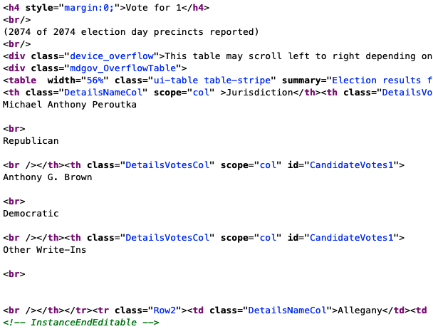

library(rvest)
library(tidyverse)
library(janitor)19 Scraping data with Rvest
Sometimes, governments put data online on a page or in a searchable database. And when you ask them for a copy of the data underneath the website, they say no.
Why? Because they have a website. That’s it. That’s their reason. They say they don’t have to give you the data because they’ve already given you the data, never mind that they haven’t given to you in a form you can actually load into R with ease.
Lucky for us, there’s a way for us to write code to get data even when an agency hasn’t made it easy: webscraping.
One of the most powerful tools you can learn as a data journalist is how to scrape data from the web. Scraping is the process of programming a computer to act like a human that opens a web browser, goes to a website, ingests the HTML from that website into R and turns it into data.
The degree of difficulty here goes from “Easy” to “So Hard You Want To Throw Your Laptop Out A Window.” And the curve between the two can be steep. You can learn how to scrape “Easy” in a day. The hard ones take a little more time, but it’s often well worth the effort because it lets you get stories you couldn’t get without it.
In this chapter, we’ll show you an easy one. And in the next chapter, we’ll so you a moderately harder one.
Let’s start easy.
We’re going to use a library called rvest, which you can install it the same way we’ve done all installs: go to the console and install.packages("rvest").
Like so many R package names, rvest is a bad pun. You’re supposed to read it to sound like “harvest”, as in “harvesting” information from a website the same way you’d harvest crops in a field.
We’ll load these packages first:
For this example, we’re going to work on loading a simple table of data from the Maryland State Board of Elections. This is a table of unofficial county-level election results for the Attorney General’s race from the November general election.
Let’s suppose we can’t find a table like that for download, but we do see a version on the SBOE website at this URL: https://elections.maryland.gov/elections/2022/general_results/gen_detail_results_2022_3_1.html.
We could get this table into R with the following manual steps: highlighting the text, copying it into Excel, saving it as a csv, and reading it into R. Or, we could write a few lines of webscraping code to have R do that for us!
In this simple example, it’s probably faster to do it manually than have R do it for us. But during the time when ballots are being counted, this table is likely to change, and we don’t want to keep doing manual repetitive tasks.
Why would we ever write code to grab a single table? There’s several reasons:
- Our methods are transparent. If a colleague wants to run our code from scratch to factcheck our work, they don’t need to repeat the manual steps, which are harder to document than writing code.
- Let’s suppose we wanted to grab the same table every day, to monitor for changes. Writing a script once, and pressing a single button every day is going to be much more efficient than doing this manually every day.
- If we’re doing it manually, we’re more likely to make a mistake, like maybe failing to copy every row from the whole table.
- It’s good practice to prepare us to do more complex scraping jobs. As we’ll see in the next chapter, if we ever want to grab the same table from hundreds of pages, writing code is much faster and easier than going to a hundred different pages ourselves and downloading data.
So, to scrape, the first thing we need to do is start with the URL. Let’s store it as an object called ag_url.
ag_url <- "https://elections.maryland.gov/elections/2022/general_results/gen_detail_results_2022_3_1.html"When we go to the web page, we can see a nicely-designed page that contains our information.
But what we really care about, for our purposes, is the html code that creates that page.
In our web browser, if we right-click anywhere on the page and select “view source” from the popup menu, we can see the source code. Or you can just copy this into Google Chrome: view-source:https://elections.maryland.gov/elections/2022/general_results/gen_detail_results_2022_3_1.html.
Here’s a picture of what some of the source code looks like.

We’ll use those HTML tags – things like <table> and <tr> – to grab the info we need.
Okay, step 1.
Let’s write a bit of code to tell R to go to the URL for the page and ingest all of that HTML code. In the code below, we’re starting with our URL and using the read_html() function from rvest to ingest all of the page html, storing it as an object called results.
# read in the html
results <- ag_url %>%
read_html()
# display the html below
results{html_document}
<html lang="en" manifest="manifest.appcache">
[1] <head>\n<meta http-equiv="Content-Type" content="text/html; charset=UTF-8 ...
[2] <body>\r\n <div class="container"> \r\n <div class="skipNav">\ ...If you’re running this code in R Studio, in our environment window at right, you’ll see results as a “list of 2”.
This is not a dataframe, it’s a different type of data structure a “nested list.”
If we click on the name “results” in our environment window, we can see that it’s pulled in the html and shown us the general page structure. Nested within the <html> tag is the <head> and <body>, the two fundamental sections of most web pages. We’re going to pull information out of the <body> tag in a bit.

Now, our task is to just pull out the section of the html that contains the information we need.
But which part do we need from that mess of html code? To figure that out, we can go back to the page in a web browser like chrome, and use built in developer tools to “inspect” the html code underlying the page.
On the page, find the data we want to grab – “Vote for 1” - and right click on the word “Jurisdiction” in the column header of the table. That will bring up a dropdown menu. Select “Inspect”, which will pop up a window called the “element inspector” that shows us where different elements on the page are located, what html tags created those elements, and other info.

The entire table that we want of results is actually contained inside an html <table>. It has a <tbody> that contains one row <tr> per county.
Because it’s inside of a table, and not some other kind of element (like a <div>), rvest has a special function for easily extracting and converting html tables, called html_table(). This function extracts all the html tables on the page, but this page only has one so we’re good.
# read in the html and extract all the tables
results <- ag_url %>%
read_html() %>%
html_table()
# show the dataframe
results[[1]]
# A tibble: 25 × 4
Jurisdiction Michael Anthony Peroutka\r\n\r\n\r\nRepubl…¹ Antho…² Other…³
<chr> <chr> <chr> <chr>
1 Allegany 14,382 6,994 16
2 Anne Arundel 91,718 121,096 433
3 Baltimore City 14,594 128,282 288
4 Baltimore County 100,480 170,858 467
5 Calvert 20,275 16,647 41
6 Caroline 7,128 3,475 13
7 Carroll 44,195 26,928 112
8 Cecil 20,750 11,844 35
9 Charles 16,042 37,945 55
10 Dorchester 6,615 4,784 16
# … with 15 more rows, and abbreviated variable names
# ¹`Michael Anthony Peroutka\r\n\r\n\r\nRepublican`,
# ²`Anthony G. Brown\r\n\r\n\r\nDemocratic`, ³`Other Write-Ins`In the environment window at right, look at results Note that it’s now a “list of 1”.
This gets a little complicated, but what you’re seeing here is a nested list that contains one data frame – also called tibbles – one for each table that exists on the web page we scraped.
So, all we need to do now is to store that single dataframe as an object. We can do that with this code, which says “keep only the first dataframe from our nested list.”
# Read in all html from table, store all tables on page as nested list of dataframes.
results <- ag_url %>%
read_html() %>%
html_table()
# Just keep the first dataframe in our list
results <- results[[1]]
# show the dataframe
results# A tibble: 25 × 4
Jurisdiction Michael Anthony Peroutka\r\n\r\n\r\nRepubl…¹ Antho…² Other…³
<chr> <chr> <chr> <chr>
1 Allegany 14,382 6,994 16
2 Anne Arundel 91,718 121,096 433
3 Baltimore City 14,594 128,282 288
4 Baltimore County 100,480 170,858 467
5 Calvert 20,275 16,647 41
6 Caroline 7,128 3,475 13
7 Carroll 44,195 26,928 112
8 Cecil 20,750 11,844 35
9 Charles 16,042 37,945 55
10 Dorchester 6,615 4,784 16
# … with 15 more rows, and abbreviated variable names
# ¹`Michael Anthony Peroutka\r\n\r\n\r\nRepublican`,
# ²`Anthony G. Brown\r\n\r\n\r\nDemocratic`, ³`Other Write-Ins`We now have a proper dataframe, albeit with some lengthy column headers.
From here, we can do a little cleaning. First we’ll use clean_names() to lower the column names. Then use rename() to replace the candidate column names with simpler versions. We can just use the column positions instead of writing out the full names, which is nice.
Then let’s use slice() to remove the last row – row number 25 – which contains totals and percentages that we don’t need. Finally, we’ll make sure the vote tallies are numbers using mutate and gsub(), which we use to replace all the commas with nothing.
# Read in all html from table, get the HTML table.
results <- ag_url %>%
read_html() %>%
html_table()
# Standardize column headers, remove last row
results <- results[[1]] %>%
clean_names() %>%
rename(peroutka = 2, brown = 3, write_ins = 4) %>%
slice(-25) %>%
mutate(peroutka = as.numeric(gsub(",","", peroutka))) %>%
mutate(brown = as.numeric(gsub(",","", brown))) %>%
mutate(write_ins = as.numeric(gsub(",","", write_ins)))
# show the dataframe
results# A tibble: 24 × 4
jurisdiction peroutka brown write_ins
<chr> <dbl> <dbl> <dbl>
1 Allegany 14382 6994 16
2 Anne Arundel 91718 121096 433
3 Baltimore City 14594 128282 288
4 Baltimore County 100480 170858 467
5 Calvert 20275 16647 41
6 Caroline 7128 3475 13
7 Carroll 44195 26928 112
8 Cecil 20750 11844 35
9 Charles 16042 37945 55
10 Dorchester 6615 4784 16
# … with 14 more rowsAnd there we go. We now have a nice tidy dataframe of Maryland attorney general election results that we could ask some questions of.